Sicklejaw — Quality Rebuild Review Board
PrimalFauna W2.1b · adopted candidate D rebuilt clean · Tripo v3 → AutoRemesher → Blender · rendered 2026-07-24 · all shots fully textured (EEVEE, fixed 3-pt rig)
Rebuild delivered. Candidate D was re-generated in a clean neutral pose, retopologised to
42.6k tris / 97.2% quads (from a 1.42M-tri generation), UV-unwrapped, re-rigged as a
48-bone Tripo creature rig with a real 6-bone tail chain (the original mixamo rig had none), and
re-textured to preserve D's look (muted grey-blue hide, cream belly, teal bio-markings, dorsal spines,
curved raptor jaw). Aggro-glow telegraph rebuilt as a scalar emissive mask. Full 5-preset anim set
re-retargeted. Styled against the vanilla hog/stinger fauna our borrowed
BT_CreatureBehavior drives.
THIS BOARD IS THE GATE. W2.2 (UE import) does not start until you re-approve this rebuild.
Compare §1 (side-by-side vs the original D you adopted) and confirm it still reads as the same Sicklejaw.
1 · Likeness — rebuild vs. the original candidate D required side-by-side


Original D — 3/4 hero (rearing, open mouth)Rebuild — 3/4 hero (neutral, closed)
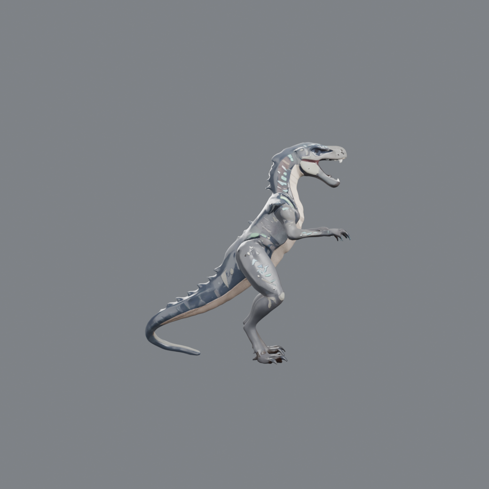
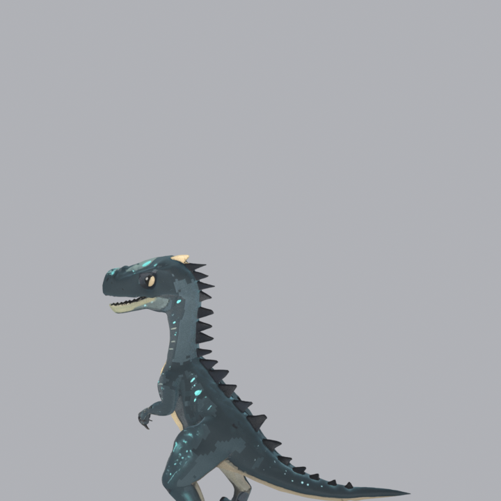
Original D — sideRebuild — side

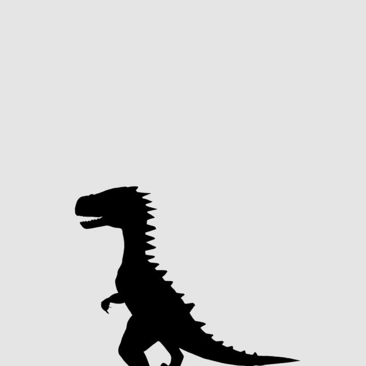
Original D — silhouetteRebuild — silhouette

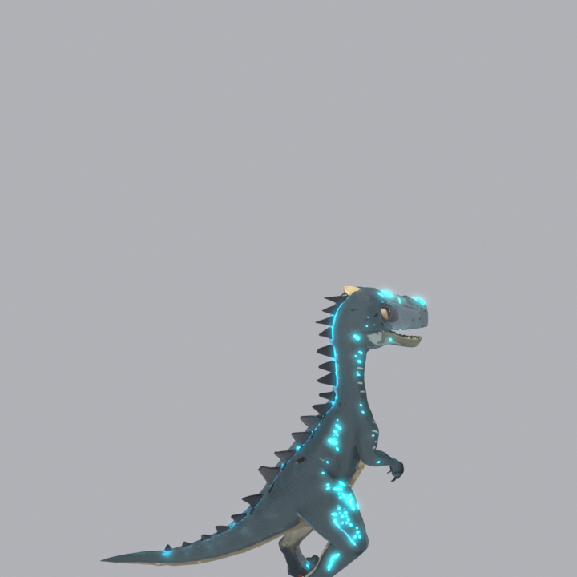
Original D — aggro ONRebuild — aggro ON
- Preserved: the aggressive theropod silhouette, oversized curved lower jaw + tooth line, the serrated dorsal-spine ridge from neck to tail, the long counter-balancing tail, digitigrade clawed legs, the cool grey-blue hide over a cream ventral, and the pale-teal bioluminescent stripe/speckle markings.
- Deliberately changed (the point of the rebuild): the pose. D's adopted render is a rearing, open-mouth action pose (baked into the mesh — bad for a rig bind). The rebuild is a neutral, near-A-pose, closed-mouth stance so the rig binds cleanly and animations read from a rest state.
- Honest drift: the rebuild is a hair leaner and its dorsal scutes slightly more regular than D; base saturation is tuned to D's muted aggro-off state (D's brighter reference was closer to its aggro-on look). Judgement call — flag it if you want it pushed closer either way.
2 · Rebuild turntable fully textured · aggro off · 42.6k tris
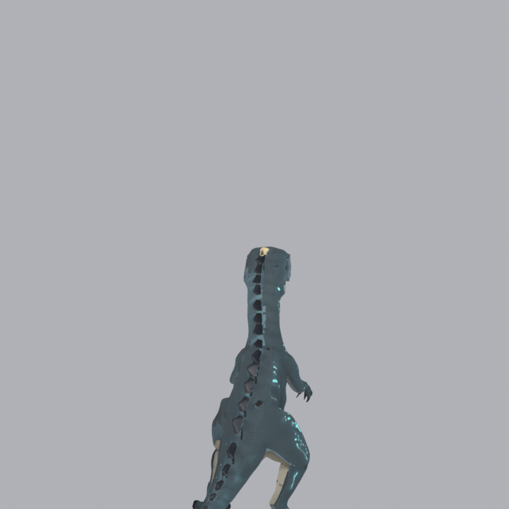
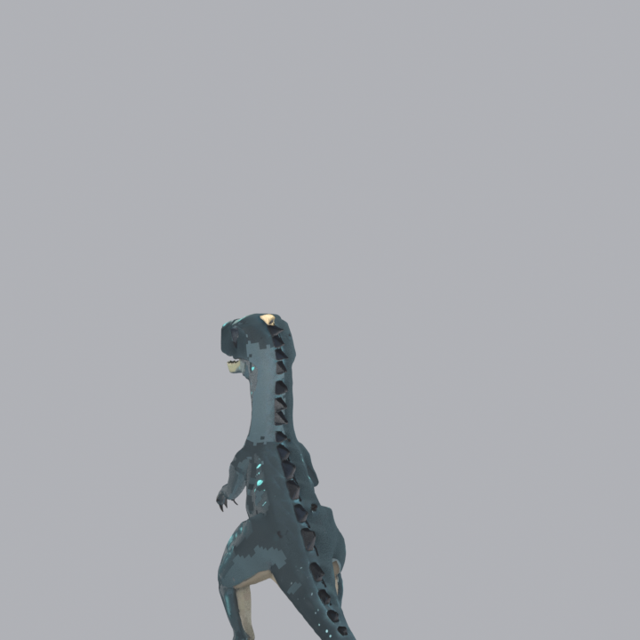
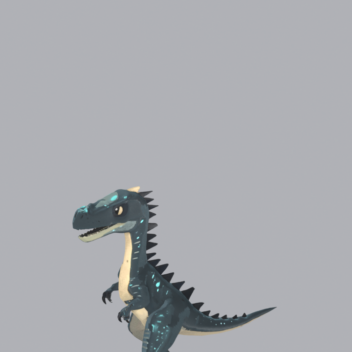
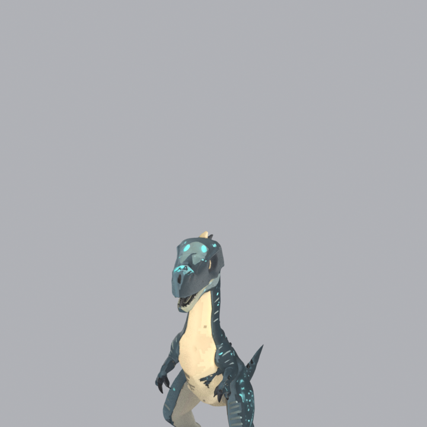
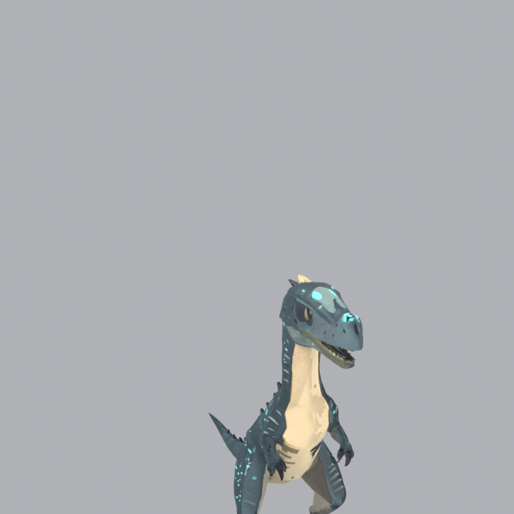
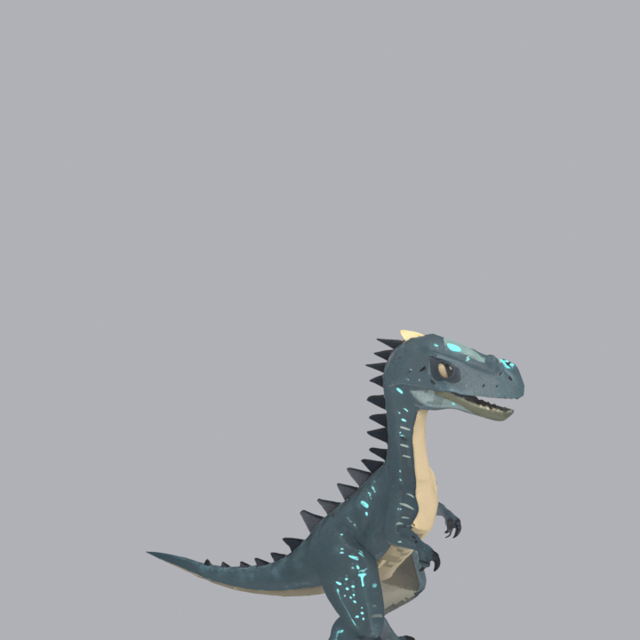
3 · Aggro-glow telegraph emissive mask · doc-01 tell
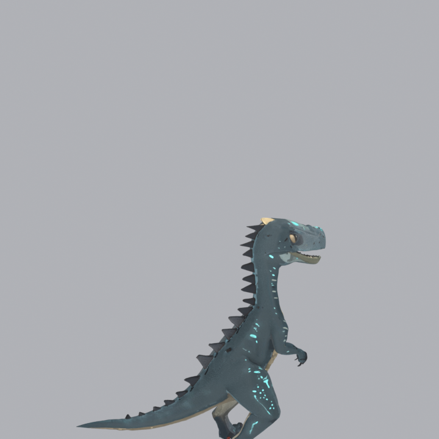
MID), no extra VFX; in-engine bloom sells the glow.4 · Silhouette read
5 · Animation proof Tripo v3 presets · rung 1 · placeholder-grade
- All 5 target presets re-obtained (idle · walk · run · slash · hurt) on the new 48-bone
spec=tripocreature rig — which, unlike the original, has a real tail chain. - Caveat (unchanged from v1): the presets are humanoid-styled — upright idle, human-ish gait, some skin stretching. Fine for systems bring-up; not final content. Raptor-motion refinement (Blender hand-author on this rig, or the Kubold pack) is the recommended next step for gait quality.
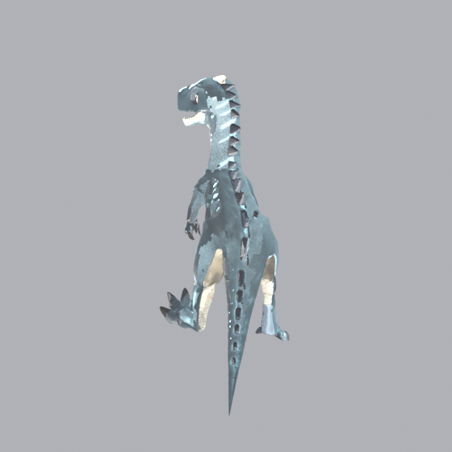
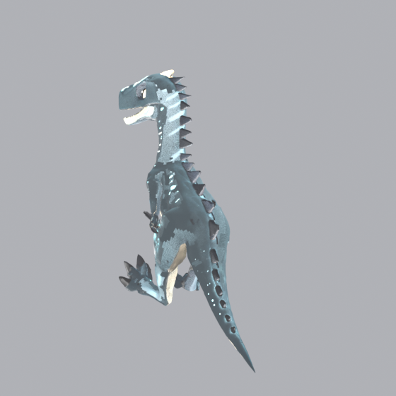
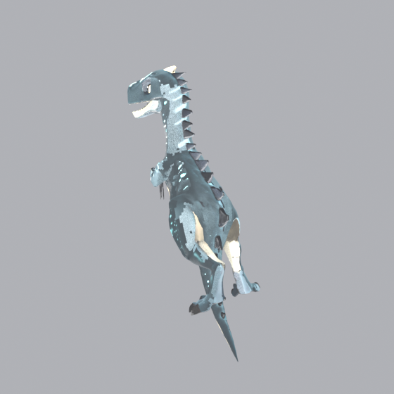
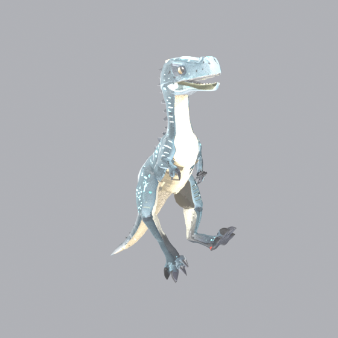
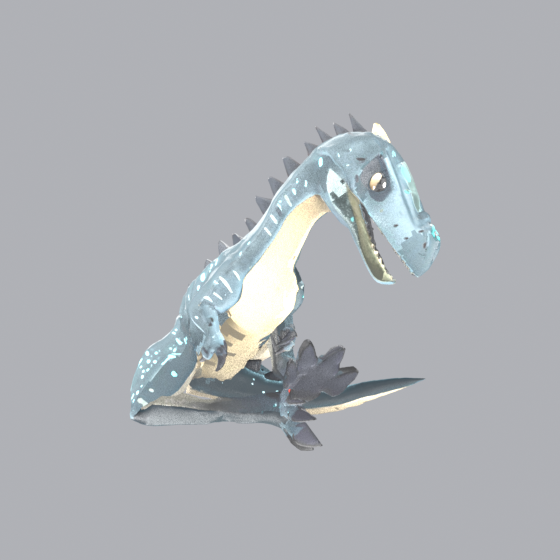
6 · How we got here — candidate journey 4 generated · judged vs D
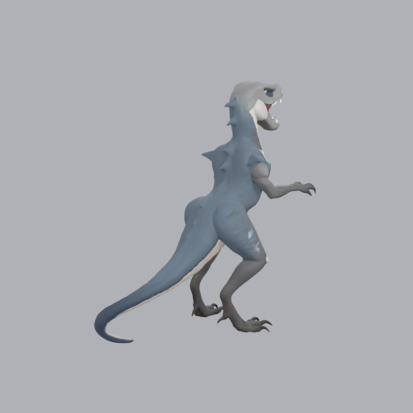
Image-to-model faithfully reproduced D's rearing/open-mouth pose. Weak teal. Wrong pose = defeats the rebuild.
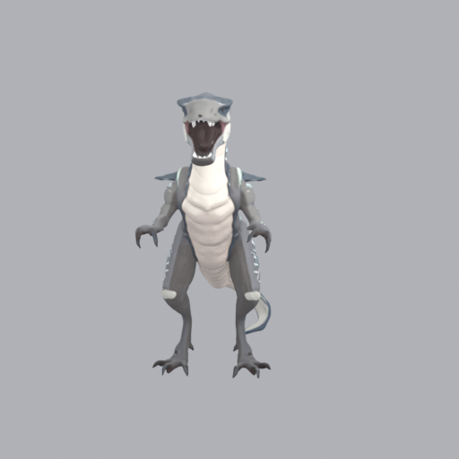
Same problem — copied the action pose + open mouth; washed-out markings.
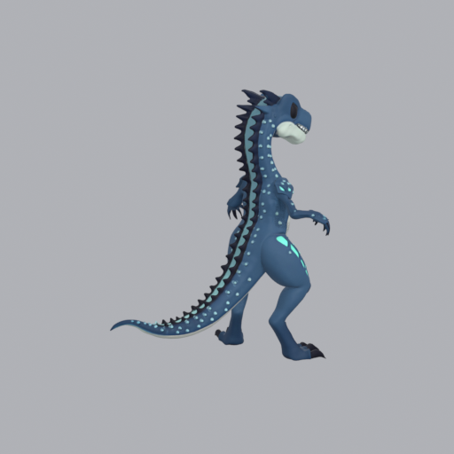
Clean neutral pose + strong teal, but too saturated / spiky vs D.
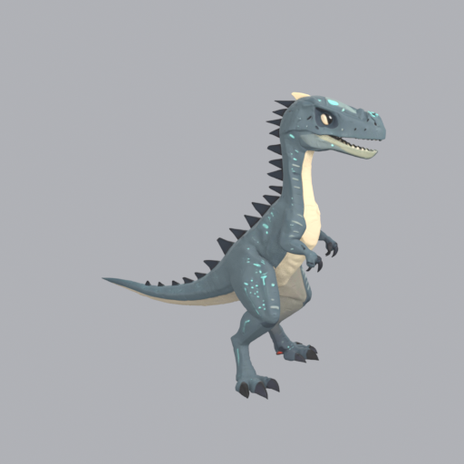
Muted grey-blue, subtle teal, low scutes, lean build — best D match with a clean closed-mouth stance.
- Method note (conscious deviation from the packet): the brief said "image-to-model." I tried it (C1/C2) and proved it copies D's rearing, open-mouth source pose — and D's old rig has no jaw bone to close the mouth. So a text-to-model pass tuned from D's renders (C3b) was the only route that hit the neutral A-pose + closed-mouth bar while holding the look. One targeted re-roll (C3→C3b), then stop.
7 · Pipeline stats, spend & next tweak
| Stage | Result |
|---|---|
| Generate | Tripo v3.1 text-to-model, D-tuned prompt (keeper C3b) |
| Retopo (new §2 standard) | AutoRemesher: 1,424,686 tris → 20,520 quads + 590 tris (97.2% quad) = 42.6k tris |
| UV | Single non-overlapping set (smart-project) |
| Scale | 1.70 m (verify/tune in UE against the 1.65 m placeholder capsule) |
| Rig-check | riggable = true, rig_type = biped (design intent met) |
| Rig | Tripo v2.5 creature rig, spec=tripo, 48 bones incl. 6-bone tail, 8-bone head |
| Texture | 2048 BaseColor + Normal + Emissive mask; look re-baked/graded from C3b |
| Animate | 5 v3 presets (idle/walk/run/slash/hurt) — placeholder-grade, humanoid-styled |
- Next tweak (one change): refine the raptor gait. Cheapest = hand-author walk/run in Blender on this tail-chained rig (now possible — the tail can move). If a horizontal-spine sprint is must-have, the pre-licensed Kubold "Raptor Dinosaur Animated" pack ($59.99) retargets onto this rig — surfaced as the fallback, your call, no purchase made.
- Known compromises: anims are placeholder-grade; base saturation tuned to D's muted state (push if you want it punchier); a couple of anim frames show retarget skin-stretch (cosmetic, retarget-inherent).
Tripo API spend: 215 cr (pool 8375→8160)
Studio pool: separate — web dashboard only
Marketplace: $0 (no purchases)
Files: art/wip/sicklejaw-rebuild/final/SK_Sicklejaw.fbx